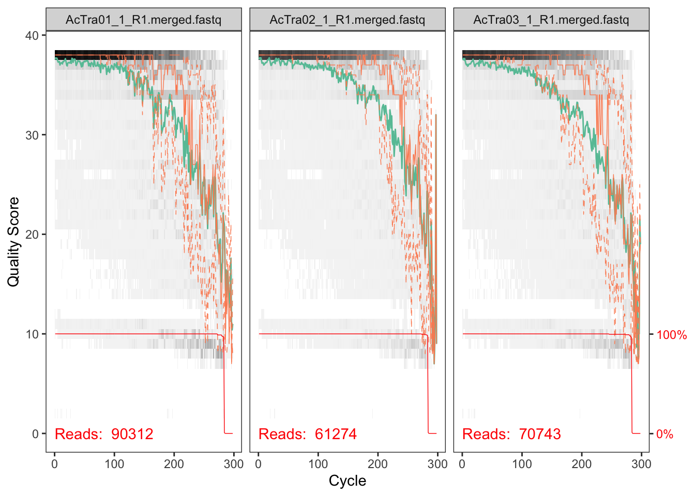
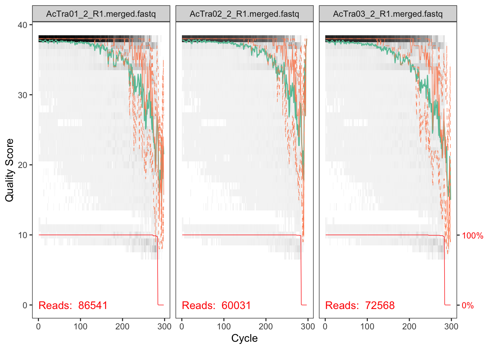
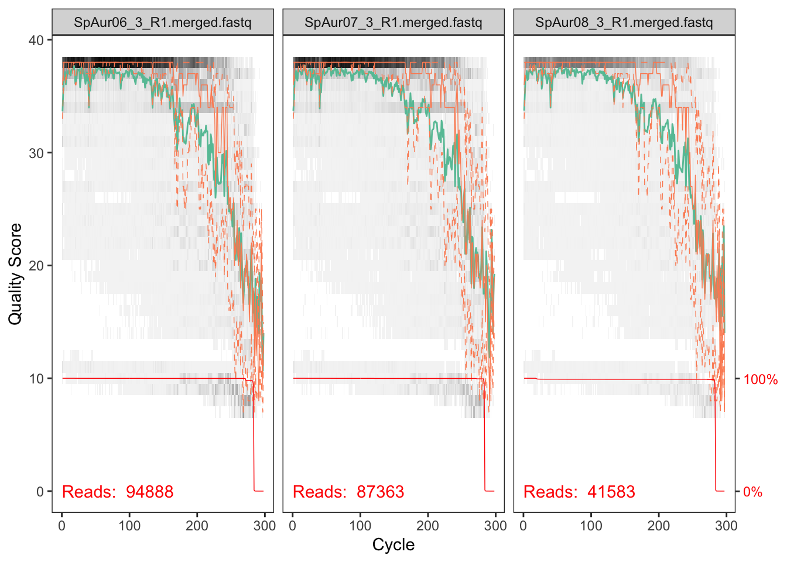
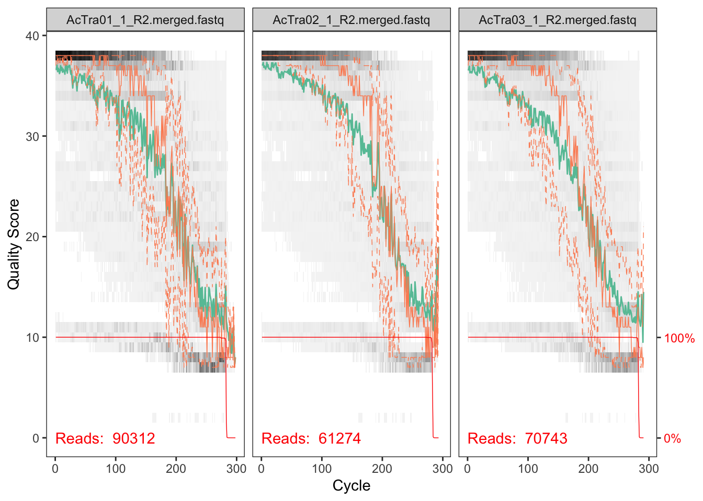
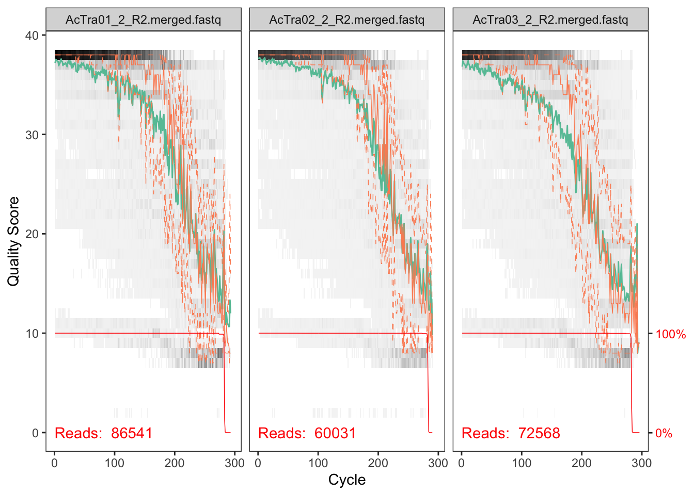
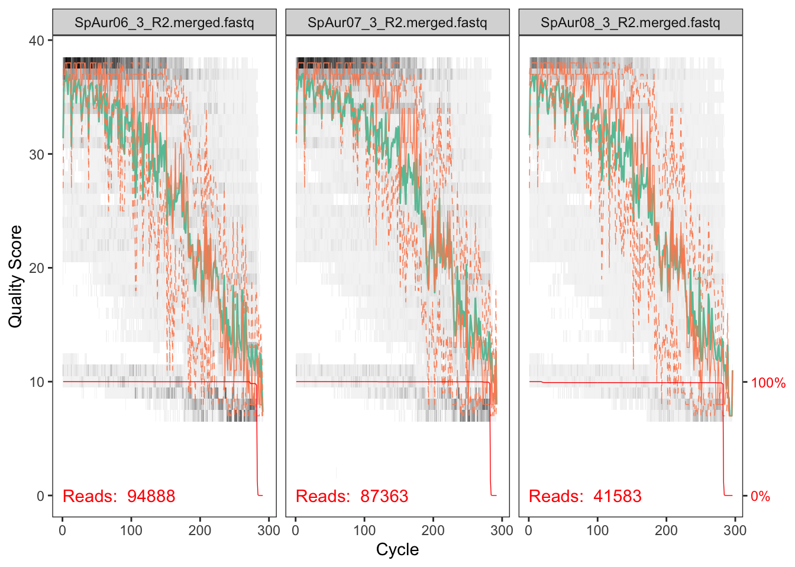
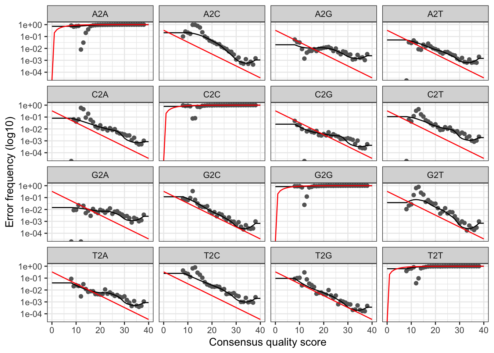
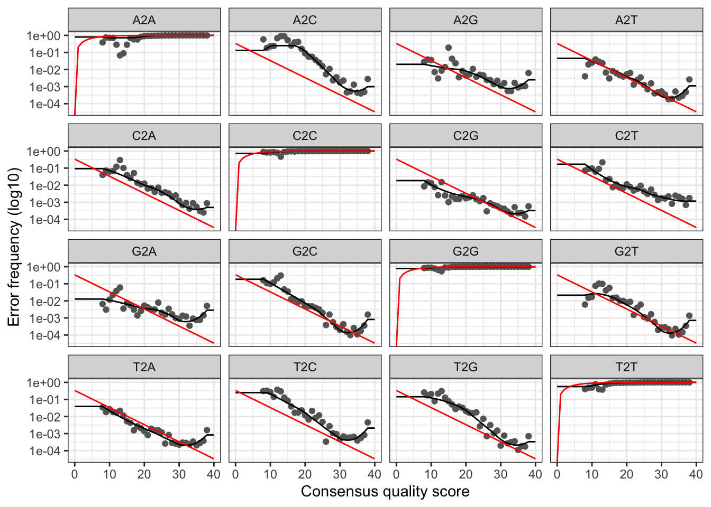

This document is used to process raw pair-end Illumina data from herbivore reef fish with DADA2. The script will process the data from different runs separately and then combine the runs and finish the DADA2 pipeline. Here we report both methods and results in plain text and R code. This document presents a completely reproducible workflow of our analysis.
We make several data types available from the DADA2 workflow. For a more complete list of data and data products, please see the Data section.
10.6084/m9.figshare.6875522: Raw data for each sample (before removing primers).
Trimmed data (primers removed) are deposited at the European Nucleotide Archive under the study accession number PRJEB28397 (ERP110594).
10.6084/m9.figshare.7357178: Final output file produce in Part F: Merge Results & Complete Workflow of this workflow as well as files for phyloseq analytical workflow. The DADA2 output file is loaded file directly into the phyloseq workflow.
10.6084/m9.figshare.6997253: DOI for this workflow.
This pipeline is exactly how we processed our data but this is not meant to be a tutorial and we only provide minimal annotation. There are many great tutorials and explanations out there on DADA2 amplicon processing that you can dive into. For example here, here, here, and here.
Depending on the DADA2 version, you may get slightly different results due to fundamental changes in the code-base. This is unavoidable at times and the developers do the best they can to maintain fidelity across versions. To replicate our results exactly, please see the end of this page for the R package and versions used in this workflow. Also, we set random number seeds to ensure full reproducibility (see below).
In the upper right hand corner of this page is a Code button. Use this to show or hide all the code in the document (default is show). Let’s proceed.
This is a workflow for processing the raw 16S rRNA Illumina data for the herbivorous reef fish microbiome study. We sequenced the fore, mid, and hind gut from 53 individual fish. The original dataset contained 7 species from 3 genera. Sparisoma chrysopterum and Scarus vetula were only represented by 1 and 2 individuals, respectively, and were omitted from the final study, however we included those samples in our pipeline and remove them before analysis.
In addition, many samples were re-sequenced and thus processed separately here before being merged during prior to analysis. There are data for 3 runs–all workflows are identical. We sequenced 144 samples in the first run (Run01) and then the sequencing center re-sequenced those samples because of lower than agreed upon yield (Run02). We then sequenced the remaining 15 samples (5 individuals) on a separate run (Run03).
In the original raw data, fastq files are named using the following convention for the root name:
Where:
So…
…corresponds to the reverse reads (R2) of the foregut from Sparisoma viride individual #8, Run1.
This part of the workflow has several important steps.
At this point in the workflow we are finished processing the individual runs. To construct our final dataset we will combine the runs, check for chimeras, and assign taxonomy. However, before we do that we are first going to continue processing the individual runs so we can see how each run performed through each step of the workflow, including the removal of chimeras. Run time is displayed after this step.
Run time is displayed after this step.
Here we combine the replicate runs Run01 and Run02, and then add in Run03. We followed this recipe for merging samples.
Run time is displayed after this step.
catadapt on all fastq files to trim adapters.cutadapt -g {F-ADAPTER} -G {R-ADAPTER} -o ${R1}.trimmed.fastq -p {R2}.trimmed.fastq ${R1} ${R2} --discard-untrimmed -e 0.12Where:
-g is GTGYCAGCMGCCGCGGTA-G is CCGYCAATTYMTTTRAGTR1 and R2 are the forward and reverse reads, respectively.This will yield a ~375 bp amplicon.
mothur to combine the R1 fore-, mid-, and hind- gut fastq files from each host. If you wish to analyze gut segments individually, skip this step. We repeated the process for the R2 reads.Lets use sample AcCoe01 as an example from Run1 where F = foregut, M = midgut, and H = hindgut
mothur"#merge.files(input=Run1_AcCoe01_F_R1_001.trimmed.fastq-Run1_AcCoe01_M_R1_001.trimmed.fastq-Run1_AcCoe01_H_R1_001.trimmed.fastq, output=AcCoe01_1_R1.fastq)"mothur` uses the dash(-) to distinguish between files to be merged so make sure your file names do not have dashes.
For programmatic reasons we chose to drop the Run prefix from the output merged file and instead delineate run id with _1_. This is probably a little confusing so change as you see fit.
These file will be the input for the DADA2 workflow and are stored in the 02_MERGED/ directory. To simplify things a little, variables for RUN01 have the suffix X1, RUN02 is Y2, and RUN03 is Z3.
path_X1 <- "DATA/02_MERGED/RUN01/INPUT_FILES/"
head(list.files(path_X1))## [1] "#filtered" "AcCoe01_1_R1.merged.fastq"
## [3] "AcCoe01_1_R2.merged.fastq" "AcCoe02_1_R1.merged.fastq"
## [5] "AcCoe02_1_R2.merged.fastq" "AcCoe03_1_R1.merged.fastq"path_Y2 <- "DATA/02_MERGED/RUN02/INPUT_FILES/"
head(list.files(path_Y2))## [1] "#filtered" "AcCoe01_2_R1.merged.fastq"
## [3] "AcCoe01_2_R2.merged.fastq" "AcCoe02_2_R1.merged.fastq"
## [5] "AcCoe02_2_R2.merged.fastq" "AcCoe03_2_R1.merged.fastq"path_Z3 <- "DATA/02_MERGED/RUN03/INPUT_FILES/"
head(list.files(path_Z3))## [1] "#filtered" "SpAur05_3_R1.merged.fastq"
## [3] "SpAur05_3_R2.merged.fastq" "SpAur06_3_R1.merged.fastq"
## [5] "SpAur06_3_R2.merged.fastq" "SpAur07_3_R1.merged.fastq"Here we see a list of files in the directory. All looks good.
fnFs_X1 <- sort(list.files(path_X1, pattern = "_R1.merged.fastq"))
fnRs_X1 <- sort(list.files(path_X1, pattern = "_R2.merged.fastq"))
fnFs_Y2 <- sort(list.files(path_Y2, pattern = "_R1.merged.fastq"))
fnRs_Y2 <- sort(list.files(path_Y2, pattern = "_R2.merged.fastq"))
fnFs_Z3 <- sort(list.files(path_Z3, pattern = "_R1.merged.fastq"))
fnRs_Z3 <- sort(list.files(path_Z3, pattern = "_R2.merged.fastq"))sample.names_X1 <- sapply(strsplit(fnFs_X1, "_"), `[`, 1)
fnFs_X1 <-file.path(path_X1, fnFs_X1)
fnRs_X1 <-file.path(path_X1, fnRs_X1)
sample.names_Y2 <- sapply(strsplit(fnFs_Y2, "_"), `[`, 1)
fnFs_Y2 <-file.path(path_Y2, fnFs_Y2)
fnRs_Y2 <-file.path(path_Y2, fnRs_Y2)
sample.names_Z3 <- sapply(strsplit(fnFs_Z3, "_"), `[`, 1)
fnFs_Z3 <-file.path(path_Z3, fnFs_Z3)
fnRs_Z3 <-file.path(path_Z3, fnRs_Z3)First let’s look at the quality of our reads. The numbers in brackets specify which samples to view. Here we are looking at three samples per run.
Forward
plotQualityProfile(fnFs_X1[9:11])## Scale for 'y' is already present. Adding another scale for 'y', which
## will replace the existing scale.
plotQualityProfile(fnFs_Y2[9:11])## Scale for 'y' is already present. Adding another scale for 'y', which
## will replace the existing scale.
plotQualityProfile(fnFs_Z3[2:4])## Scale for 'y' is already present. Adding another scale for 'y', which
## will replace the existing scale.
Reverse
plotQualityProfile(fnRs_X1[9:11])## Scale for 'y' is already present. Adding another scale for 'y', which
## will replace the existing scale.
plotQualityProfile(fnRs_Y2[9:11])## Scale for 'y' is already present. Adding another scale for 'y', which
## will replace the existing scale.
plotQualityProfile(fnRs_Z3[2:4])## Scale for 'y' is already present. Adding another scale for 'y', which
## will replace the existing scale.
The reverse reads are so so but the forward reads look pretty good. We will deal with the low quality of reverse reads in subsequent steps.
#Place filtered files in filtered/ subdirectory
filt_path_X1 <- file.path(path_X1, "filtered")
filtFs_X1 <- file.path(filt_path_X1, paste0(sample.names_X1, "_F_filt.fastq.gz"))
filtRs_X1 <- file.path(filt_path_X1, paste0(sample.names_X1, "_R_filt.fastq.gz"))
filt_path_Y2 <- file.path(path_Y2, "filtered")
filtFs_Y2 <- file.path(filt_path_Y2, paste0(sample.names_Y2, "_F_filt.fastq.gz"))
filtRs_Y2 <- file.path(filt_path_Y2, paste0(sample.names_Y2, "_R_filt.fastq.gz"))
filt_path_Z3 <- file.path(path_Z3, "filtered")
filtFs_Z3 <- file.path(filt_path_Z3, paste0(sample.names_Z3, "_F_filt.fastq.gz"))
filtRs_Z3 <- file.path(filt_path_Z3, paste0(sample.names_Z3, "_R_filt.fastq.gz"))out_X1 <- filterAndTrim(fnFs_X1, filtFs_X1, fnRs_X1, filtRs_X1,
truncLen=c(260,160), maxN=0, maxEE=c(2,5),
truncQ=2, rm.phix=TRUE, compress=TRUE,
multithread=TRUE)## Creating output directory: DATA/02_MERGED/RUN01/INPUT_FILES//filteredhead(out_X1)## reads.in reads.out
## AcCoe01_1_R1.merged.fastq 97888 79323
## AcCoe02_1_R1.merged.fastq 148939 124257
## AcCoe03_1_R1.merged.fastq 133582 109983
## AcCoe04_1_R1.merged.fastq 134208 107426
## AcCoe05_1_R1.merged.fastq 68449 54839
## AcCoe06_1_R1.merged.fastq 114701 93969out_Y2 <- filterAndTrim(fnFs_Y2, filtFs_Y2, fnRs_Y2, filtRs_Y2,
truncLen=c(260,160), maxN=0, maxEE=c(2,5),
truncQ=2, rm.phix=TRUE, compress=TRUE,
multithread=TRUE)## Creating output directory: DATA/02_MERGED/RUN02/INPUT_FILES//filteredhead(out_Y2)## reads.in reads.out
## AcCoe01_2_R1.merged.fastq 91574 85501
## AcCoe02_2_R1.merged.fastq 126168 118326
## AcCoe03_2_R1.merged.fastq 128237 120208
## AcCoe04_2_R1.merged.fastq 128924 120267
## AcCoe05_2_R1.merged.fastq 57834 53797
## AcCoe06_2_R1.merged.fastq 98618 92446out_Z3 <- filterAndTrim(fnFs_Z3, filtFs_Z3, fnRs_Z3, filtRs_Z3,
truncLen=c(260,140), maxN=0, maxEE=c(2,5),
truncQ=2, rm.phix=TRUE, compress=TRUE,
multithread=TRUE)## Creating output directory: DATA/02_MERGED/RUN03/INPUT_FILES//filteredhead(out_Z3)## reads.in reads.out
## SpAur05_3_R1.merged.fastq 79781 65844
## SpAur06_3_R1.merged.fastq 94888 68615
## SpAur07_3_R1.merged.fastq 87363 67714
## SpAur08_3_R1.merged.fastq 41583 31592
## SpAur09_3_R1.merged.fastq 64421 51507Forward
errF_X1 <- learnErrors(filtFs_X1, multithread = TRUE)## 109457140 total bases in 420989 reads from 4 samples will be used for learning the error rates.errF_Y2 <- learnErrors(filtFs_Y2, multithread = TRUE)## 115518520 total bases in 444302 reads from 4 samples will be used for learning the error rates.errF_Z3 <- learnErrors(filtFs_Z3, multithread = TRUE)## 74170720 total bases in 285272 reads from 5 samples will be used for learning the error rates.Reverse
errR_X1 <- learnErrors(filtRs_X1, multithread = TRUE)## 101246560 total bases in 632791 reads from 7 samples will be used for learning the error rates.errR_Y2 <- learnErrors(filtRs_Y2, multithread = TRUE)## 104038400 total bases in 650240 reads from 7 samples will be used for learning the error rates.errR_Z3 <- learnErrors(filtRs_Z3, multithread = TRUE)## 39938080 total bases in 285272 reads from 5 samples will be used for learning the error rates.plotErrors(errR_X1, nominalQ=TRUE)
plotErrors(errR_Y2, nominalQ=TRUE)plotErrors(errR_Z3, nominalQ=TRUE)
To see the results of the derepFastq command for forward and reverse reads, add the flag verbose = TRUE. We have omitted it here because it takes up a lot of space and the data is summarized at the end anyway.
Forward
derepFs_X1 <- derepFastq(filtFs_X1)
names(derepFs_X1) <- sample.names_X1
derepFs_Y2 <- derepFastq(filtFs_Y2)
names(derepFs_Y2) <- sample.names_Y2
derepFs_Z3 <- derepFastq(filtFs_Z3)
names(derepFs_Z3) <- sample.names_Z3Reverse
derepRs_X1 <- derepFastq(filtRs_X1)
names(derepRs_X1) <- sample.names_X1
derepRs_Y2 <- derepFastq(filtRs_Y2)
names(derepRs_Y2) <- sample.names_Y2
derepRs_Z3 <- derepFastq(filtRs_Z3)
names(derepRs_Z3) <- sample.names_Z3#Run01
dadaFs_X1 <- dada(derepFs_X1, err = errF_X1, multithread = TRUE)## Sample 1 - 79323 reads in 27509 unique sequences.
## Sample 2 - 124257 reads in 33548 unique sequences.
## Sample 3 - 109983 reads in 36094 unique sequences.
## Sample 4 - 107426 reads in 20324 unique sequences.
## Sample 5 - 54839 reads in 20919 unique sequences.
## Sample 6 - 93969 reads in 24577 unique sequences.
## Sample 7 - 62994 reads in 18046 unique sequences.
## Sample 8 - 109970 reads in 24022 unique sequences.
## Sample 9 - 58961 reads in 17471 unique sequences.
## Sample 10 - 47193 reads in 11921 unique sequences.
## Sample 11 - 44695 reads in 19893 unique sequences.
## Sample 12 - 58944 reads in 25747 unique sequences.
## Sample 13 - 82130 reads in 34860 unique sequences.
## Sample 14 - 69204 reads in 29607 unique sequences.
## Sample 15 - 71028 reads in 17125 unique sequences.
## Sample 16 - 102682 reads in 19461 unique sequences.
## Sample 17 - 43869 reads in 18417 unique sequences.
## Sample 18 - 43471 reads in 18942 unique sequences.
## Sample 19 - 49400 reads in 16249 unique sequences.
## Sample 20 - 58250 reads in 16448 unique sequences.
## Sample 21 - 68732 reads in 26424 unique sequences.
## Sample 22 - 59444 reads in 17652 unique sequences.
## Sample 23 - 74882 reads in 18846 unique sequences.
## Sample 24 - 64116 reads in 20847 unique sequences.
## Sample 25 - 43943 reads in 11334 unique sequences.
## Sample 26 - 54691 reads in 17311 unique sequences.
## Sample 27 - 35719 reads in 12961 unique sequences.
## Sample 28 - 44621 reads in 13803 unique sequences.
## Sample 29 - 53553 reads in 13036 unique sequences.
## Sample 30 - 35537 reads in 9494 unique sequences.
## Sample 31 - 54042 reads in 12343 unique sequences.
## Sample 32 - 28036 reads in 10017 unique sequences.
## Sample 33 - 69308 reads in 17169 unique sequences.
## Sample 34 - 43207 reads in 10551 unique sequences.
## Sample 35 - 58143 reads in 17394 unique sequences.
## Sample 36 - 76500 reads in 17740 unique sequences.
## Sample 37 - 55554 reads in 17647 unique sequences.
## Sample 38 - 46203 reads in 13656 unique sequences.
## Sample 39 - 50569 reads in 17552 unique sequences.
## Sample 40 - 82608 reads in 28226 unique sequences.
## Sample 41 - 55925 reads in 15757 unique sequences.
## Sample 42 - 76240 reads in 19676 unique sequences.
## Sample 43 - 52699 reads in 15027 unique sequences.
## Sample 44 - 51337 reads in 15342 unique sequences.
## Sample 45 - 63836 reads in 18229 unique sequences.
## Sample 46 - 70643 reads in 18633 unique sequences.
## Sample 47 - 91633 reads in 20634 unique sequences.
## Sample 48 - 54959 reads in 12572 unique sequences.dadaFs_X1[[1]]## dada-class: object describing DADA2 denoising results
## 1251 sequence variants were inferred from 27509 input unique sequences.
## Key parameters: OMEGA_A = 1e-40, OMEGA_C = 1e-40, BAND_SIZE = 16#Run02
dadaFs_Y2 <- dada(derepFs_Y2, err = errF_Y2, multithread = TRUE)## Sample 1 - 85501 reads in 22195 unique sequences.
## Sample 2 - 118326 reads in 25558 unique sequences.
## Sample 3 - 120208 reads in 30728 unique sequences.
## Sample 4 - 120267 reads in 15185 unique sequences.
## Sample 5 - 53797 reads in 16151 unique sequences.
## Sample 6 - 92446 reads in 17587 unique sequences.
## Sample 7 - 59695 reads in 13095 unique sequences.
## Sample 8 - 125625 reads in 18718 unique sequences.
## Sample 9 - 76696 reads in 14989 unique sequences.
## Sample 10 - 55799 reads in 9285 unique sequences.
## Sample 11 - 59961 reads in 20741 unique sequences.
## Sample 12 - 72460 reads in 22849 unique sequences.
## Sample 13 - 90114 reads in 27629 unique sequences.
## Sample 14 - 79980 reads in 25044 unique sequences.
## Sample 15 - 94515 reads in 13804 unique sequences.
## Sample 16 - 125907 reads in 13923 unique sequences.
## Sample 17 - 52713 reads in 14785 unique sequences.
## Sample 18 - 60881 reads in 18526 unique sequences.
## Sample 19 - 62239 reads in 12865 unique sequences.
## Sample 20 - 82512 reads in 13238 unique sequences.
## Sample 21 - 74952 reads in 20492 unique sequences.
## Sample 22 - 64825 reads in 12802 unique sequences.
## Sample 23 - 93473 reads in 13720 unique sequences.
## Sample 24 - 68671 reads in 15252 unique sequences.
## Sample 25 - 52892 reads in 8527 unique sequences.
## Sample 26 - 71724 reads in 13603 unique sequences.
## Sample 27 - 45773 reads in 11432 unique sequences.
## Sample 28 - 50722 reads in 10138 unique sequences.
## Sample 29 - 66618 reads in 9439 unique sequences.
## Sample 30 - 45238 reads in 6769 unique sequences.
## Sample 31 - 66666 reads in 8816 unique sequences.
## Sample 32 - 26836 reads in 7563 unique sequences.
## Sample 33 - 74257 reads in 11827 unique sequences.
## Sample 34 - 52599 reads in 7548 unique sequences.
## Sample 35 - 64923 reads in 12844 unique sequences.
## Sample 36 - 82656 reads in 12440 unique sequences.
## Sample 37 - 65303 reads in 13222 unique sequences.
## Sample 38 - 55227 reads in 9908 unique sequences.
## Sample 39 - 53956 reads in 13798 unique sequences.
## Sample 40 - 95874 reads in 21157 unique sequences.
## Sample 41 - 76174 reads in 12002 unique sequences.
## Sample 42 - 81442 reads in 13509 unique sequences.
## Sample 43 - 66432 reads in 10788 unique sequences.
## Sample 44 - 58457 reads in 10938 unique sequences.
## Sample 45 - 76432 reads in 13405 unique sequences.
## Sample 46 - 84593 reads in 12860 unique sequences.
## Sample 47 - 105756 reads in 14188 unique sequences.
## Sample 48 - 68265 reads in 8457 unique sequences.dadaFs_Y2[[1]]## dada-class: object describing DADA2 denoising results
## 1405 sequence variants were inferred from 22195 input unique sequences.
## Key parameters: OMEGA_A = 1e-40, OMEGA_C = 1e-40, BAND_SIZE = 16#Run03
dadaFs_Z3 <- dada(derepFs_Z3, err = errF_Z3, multithread = TRUE)## Sample 1 - 65844 reads in 18729 unique sequences.
## Sample 2 - 68615 reads in 22068 unique sequences.
## Sample 3 - 67714 reads in 18776 unique sequences.
## Sample 4 - 31592 reads in 8781 unique sequences.
## Sample 5 - 51507 reads in 17642 unique sequences.dadaFs_Z3[[1]]## dada-class: object describing DADA2 denoising results
## 211 sequence variants were inferred from 18729 input unique sequences.
## Key parameters: OMEGA_A = 1e-40, OMEGA_C = 1e-40, BAND_SIZE = 16#Run01
dadaRs_X1 <- dada(derepRs_X1, err = errR_X1, multithread = TRUE)## Sample 1 - 79323 reads in 19285 unique sequences.
## Sample 2 - 124257 reads in 27782 unique sequences.
## Sample 3 - 109983 reads in 28568 unique sequences.
## Sample 4 - 107426 reads in 15001 unique sequences.
## Sample 5 - 54839 reads in 14418 unique sequences.
## Sample 6 - 93969 reads in 17538 unique sequences.
## Sample 7 - 62994 reads in 15737 unique sequences.
## Sample 8 - 109970 reads in 18249 unique sequences.
## Sample 9 - 58961 reads in 11803 unique sequences.
## Sample 10 - 47193 reads in 8814 unique sequences.
## Sample 11 - 44695 reads in 15897 unique sequences.
## Sample 12 - 58944 reads in 17009 unique sequences.
## Sample 13 - 82130 reads in 22702 unique sequences.
## Sample 14 - 69204 reads in 21250 unique sequences.
## Sample 15 - 71028 reads in 13252 unique sequences.
## Sample 16 - 102682 reads in 14119 unique sequences.
## Sample 17 - 43869 reads in 11108 unique sequences.
## Sample 18 - 43471 reads in 10498 unique sequences.
## Sample 19 - 49400 reads in 9656 unique sequences.
## Sample 20 - 58250 reads in 9817 unique sequences.
## Sample 21 - 68732 reads in 17036 unique sequences.
## Sample 22 - 59444 reads in 10313 unique sequences.
## Sample 23 - 74882 reads in 10065 unique sequences.
## Sample 24 - 64116 reads in 13892 unique sequences.
## Sample 25 - 43943 reads in 7174 unique sequences.
## Sample 26 - 54691 reads in 10214 unique sequences.
## Sample 27 - 35719 reads in 7173 unique sequences.
## Sample 28 - 44621 reads in 8292 unique sequences.
## Sample 29 - 53553 reads in 6638 unique sequences.
## Sample 30 - 35537 reads in 5021 unique sequences.
## Sample 31 - 54042 reads in 7062 unique sequences.
## Sample 32 - 28036 reads in 7527 unique sequences.
## Sample 33 - 69308 reads in 9887 unique sequences.
## Sample 34 - 43207 reads in 5898 unique sequences.
## Sample 35 - 58143 reads in 10019 unique sequences.
## Sample 36 - 76500 reads in 10385 unique sequences.
## Sample 37 - 55554 reads in 10762 unique sequences.
## Sample 38 - 46203 reads in 7689 unique sequences.
## Sample 39 - 50569 reads in 10965 unique sequences.
## Sample 40 - 82608 reads in 17910 unique sequences.
## Sample 41 - 55925 reads in 8616 unique sequences.
## Sample 42 - 76240 reads in 11512 unique sequences.
## Sample 43 - 52699 reads in 8791 unique sequences.
## Sample 44 - 51337 reads in 8097 unique sequences.
## Sample 45 - 63836 reads in 11179 unique sequences.
## Sample 46 - 70643 reads in 10180 unique sequences.
## Sample 47 - 91633 reads in 11364 unique sequences.
## Sample 48 - 54959 reads in 7366 unique sequences.dadaRs_X1[[1]]## dada-class: object describing DADA2 denoising results
## 909 sequence variants were inferred from 19285 input unique sequences.
## Key parameters: OMEGA_A = 1e-40, OMEGA_C = 1e-40, BAND_SIZE = 16#Run02
dadaRs_Y2 <- dada(derepRs_Y2, err = errR_Y2, multithread = TRUE)## Sample 1 - 85501 reads in 16639 unique sequences.
## Sample 2 - 118326 reads in 22202 unique sequences.
## Sample 3 - 120208 reads in 24550 unique sequences.
## Sample 4 - 120267 reads in 11578 unique sequences.
## Sample 5 - 53797 reads in 12082 unique sequences.
## Sample 6 - 92446 reads in 13167 unique sequences.
## Sample 7 - 59695 reads in 11907 unique sequences.
## Sample 8 - 125625 reads in 15261 unique sequences.
## Sample 9 - 76696 reads in 11325 unique sequences.
## Sample 10 - 55799 reads in 7450 unique sequences.
## Sample 11 - 59961 reads in 18815 unique sequences.
## Sample 12 - 72460 reads in 16756 unique sequences.
## Sample 13 - 90114 reads in 19731 unique sequences.
## Sample 14 - 79980 reads in 19639 unique sequences.
## Sample 15 - 94515 reads in 11109 unique sequences.
## Sample 16 - 125907 reads in 11037 unique sequences.
## Sample 17 - 52713 reads in 9799 unique sequences.
## Sample 18 - 60881 reads in 10434 unique sequences.
## Sample 19 - 62239 reads in 8446 unique sequences.
## Sample 20 - 82512 reads in 8724 unique sequences.
## Sample 21 - 74952 reads in 13904 unique sequences.
## Sample 22 - 64825 reads in 8223 unique sequences.
## Sample 23 - 93473 reads in 8403 unique sequences.
## Sample 24 - 68671 reads in 10708 unique sequences.
## Sample 25 - 52892 reads in 5679 unique sequences.
## Sample 26 - 71724 reads in 8706 unique sequences.
## Sample 27 - 45773 reads in 6694 unique sequences.
## Sample 28 - 50722 reads in 6462 unique sequences.
## Sample 29 - 66618 reads in 5577 unique sequences.
## Sample 30 - 45238 reads in 4103 unique sequences.
## Sample 31 - 66666 reads in 5663 unique sequences.
## Sample 32 - 26836 reads in 6371 unique sequences.
## Sample 33 - 74257 reads in 7396 unique sequences.
## Sample 34 - 52599 reads in 4567 unique sequences.
## Sample 35 - 64923 reads in 8176 unique sequences.
## Sample 36 - 82656 reads in 7908 unique sequences.
## Sample 37 - 65303 reads in 8803 unique sequences.
## Sample 38 - 55227 reads in 6153 unique sequences.
## Sample 39 - 53956 reads in 9460 unique sequences.
## Sample 40 - 95874 reads in 14812 unique sequences.
## Sample 41 - 76174 reads in 7173 unique sequences.
## Sample 42 - 81442 reads in 8719 unique sequences.
## Sample 43 - 66432 reads in 7025 unique sequences.
## Sample 44 - 58457 reads in 6350 unique sequences.
## Sample 45 - 76432 reads in 8753 unique sequences.
## Sample 46 - 84593 reads in 7961 unique sequences.
## Sample 47 - 105756 reads in 8652 unique sequences.
## Sample 48 - 68265 reads in 5799 unique sequences.dadaRs_Y2[[1]]## dada-class: object describing DADA2 denoising results
## 955 sequence variants were inferred from 16639 input unique sequences.
## Key parameters: OMEGA_A = 1e-40, OMEGA_C = 1e-40, BAND_SIZE = 16#Run03
dadaRs_Z3 <- dada(derepRs_Z3, err = errR_Z3, multithread = TRUE)## Sample 1 - 65844 reads in 14127 unique sequences.
## Sample 2 - 68615 reads in 17312 unique sequences.
## Sample 3 - 67714 reads in 13590 unique sequences.
## Sample 4 - 31592 reads in 6901 unique sequences.
## Sample 5 - 51507 reads in 13553 unique sequences.dadaRs_Z3[[1]]## dada-class: object describing DADA2 denoising results
## 169 sequence variants were inferred from 14127 input unique sequences.
## Key parameters: OMEGA_A = 1e-40, OMEGA_C = 1e-40, BAND_SIZE = 16To see the results of the mergePairs command for each run, add the flag verbose = TRUE. We have omitted it here because it takes up a lot of space and the data is summarized at the end anyway.
mergers_X1 <- mergePairs(dadaFs_X1, derepFs_X1, dadaRs_X1, derepRs_X1)
mergers_Y2 <- mergePairs(dadaFs_Y2, derepFs_Y2, dadaRs_Y2, derepRs_Y2)
mergers_Z3 <- mergePairs(dadaFs_Z3, derepFs_Z3, dadaRs_Z3, derepRs_Z3)#Run01
seqtab_X1 <- makeSequenceTable(mergers_X1)
dim(seqtab_X1)## [1] 48 21037table(nchar(getSequences(seqtab_X1)))##
## 260 262 263 264 266 268 269 270 272 276 277 281 282 283 285
## 35 1 1 1 1 1 2 1 1 2 3 2 1 1 1
## 287 292 294 297 298 300 301 303 304 305 306 307 308 309 310
## 3 1 2 1 1 2 1 2 2 6 3 6 7 1 6
## 311 312 313 317 318 319 320 321 328 330 333 336 342 343 344
## 1 1 3 2 2 3 1 1 1 1 1 5 5 5 15
## 345 346 347 348 349 350 351 356 357 358 359 360 361 362 363
## 26 12 3 2 1 6 1 3 2 3 1 6 7 9 7
## 364 365 366 367 368 369 370 371 372 373 374 375 376 377 378
## 11 14 100 155 212 340 376 259 830 2169 605 5283 2907 6976 270
## 379 380 381 382 383 384 385 386 387 388 389 390 391 392 393
## 73 42 19 9 19 13 10 10 7 5 5 5 1 1 8
## 395 396 397 399 400 402 403 404 405 406 407 408
## 1 1 4 3 5 8 7 16 5 5 2 12#Run02
seqtab_Y2 <- makeSequenceTable(mergers_Y2)
dim(seqtab_Y2)## [1] 48 23713table(nchar(getSequences(seqtab_Y2)))##
## 260 264 268 275 276 277 278 280 281 283 287 294 297 298 300
## 37 1 2 1 1 3 1 1 1 1 2 1 1 1 3
## 301 302 303 304 305 306 307 308 310 312 313 317 318 319 320
## 2 1 4 5 4 3 3 5 1 1 2 1 2 2 1
## 321 333 335 336 338 342 343 344 345 346 347 348 350 352 355
## 1 1 1 3 1 5 5 10 26 14 3 2 6 1 3
## 356 357 358 359 360 361 362 363 364 365 366 367 368 369 370
## 1 1 3 1 10 5 10 9 10 15 116 168 233 342 438
## 371 372 373 374 375 376 377 378 379 380 381 382 383 384 385
## 293 908 2453 692 5858 3311 8023 323 83 54 24 10 18 7 9
## 386 387 388 389 390 391 392 393 394 395 396 397 398 399 400
## 8 5 11 3 1 1 1 8 2 1 3 5 1 1 5
## 402 403 404 405 406 407 408
## 9 4 17 4 6 1 12#Run03
seqtab_Z3 <- makeSequenceTable(mergers_Z3)
dim(seqtab_Z3)## [1] 5 2841table(nchar(getSequences(seqtab_Z3)))##
## 260 285 312 346 367 368 369 370 371 372 373 374 375 376 377
## 5 1 1 1 2 20 24 7 15 89 151 46 546 1016 869
## 378 379 380 381 386
## 33 6 7 1 1#Run01
seqtab_X1.2 <- seqtab_X1[,nchar(colnames(seqtab_X1)) %in% seq(368,380)]
dim(seqtab_X1.2)## [1] 48 20342table(nchar(getSequences(seqtab_X1.2)))##
## 368 369 370 371 372 373 374 375 376 377 378 379 380
## 212 340 376 259 830 2169 605 5283 2907 6976 270 73 42#Run02
seqtab_Y2.2 <- seqtab_Y2[,nchar(colnames(seqtab_Y2)) %in% seq(368,380)]
dim(seqtab_Y2.2)## [1] 48 23011table(nchar(getSequences(seqtab_Y2.2)))##
## 368 369 370 371 372 373 374 375 376 377 378 379 380
## 233 342 438 293 908 2453 692 5858 3311 8023 323 83 54#Run03
seqtab_Z3.2 <- seqtab_Z3[,nchar(colnames(seqtab_Z3)) %in% seq(368,380)]
dim(seqtab_Z3.2)## [1] 5 2829table(nchar(getSequences(seqtab_Z3.2)))##
## 368 369 370 371 372 373 374 375 376 377 378 379 380
## 20 24 7 15 89 151 46 546 1016 869 33 6 7Save the data to use in the next part of the workflow workflow. For our final analysis (Part VI), we will combine these outputs and the screen for chimeras/assign taxonomy.
saveRDS(seqtab_X1.2, "DATA/02_MERGED/RUN01/seqtab_X1.2.rds")
saveRDS(seqtab_Y2.2, "DATA/02_MERGED/RUN02/seqtab_Y2.2.rds")
saveRDS(seqtab_Z3.2, "DATA/02_MERGED/RUN03/seqtab_Z3.2.rds")Processing time…
proc.time() - ptm## user system elapsed
## 283.511 646.373 6192.757This part of the workflow is finished
Optional steps to process individual runs
We were interested in the overall performance of each run and wanted to gauge how read totals changed through the pipeline. So we continued with chimera removal and generated a summary table tracking reads by sample. These step could also be useful to compare data across runs, but we will not do that here.
To see the results of the removeBimeraDenovo command in the console output, add the flag verbose = TRUE to the code chunk. We have omitted it here because it takes up a lot of space. This data is summarized at the end anyway so you’re not missing out.
#Run01
seqtab_X1.2.nochim <- removeBimeraDenovo(seqtab_X1.2,
method="consensus", multithread=TRUE)
dim(seqtab_X1.2.nochim)## [1] 48 8412sum(seqtab_X1.2.nochim)/sum(seqtab_X1.2)## [1] 0.933459#Run02
seqtab_Y2.2.nochim <- removeBimeraDenovo(seqtab_Y2.2,
method="consensus", multithread=TRUE)
dim(seqtab_Y2.2.nochim)## [1] 48 9551sum(seqtab_Y2.2.nochim)/sum(seqtab_Y2.2)## [1] 0.932805#Run03
seqtab_Z3.2.nochim <- removeBimeraDenovo(seqtab_Z3.2,
method="consensus", multithread=TRUE)
dim(seqtab_Z3.2.nochim)## [1] 5 1135sum(seqtab_Z3.2.nochim)/sum(seqtab_Z3.2)## [1] 0.8678646#Run01
getN_X1 <- function(x) sum(getUniques(x))
track_X1 <- cbind(out_X1, sapply(dadaFs_X1, getN_X1),
sapply(dadaRs_X1, getN_X1), sapply(mergers_X1, getN_X1),
rowSums(seqtab_X1.2.nochim))
colnames(track_X1) <- c("input", "filtered", "denoisedF",
"denoisedR", "merged", "nonchim")
rownames(track_X1) <- sample.names_X1
#Run02
getN_Y2 <- function(x) sum(getUniques(x))
track_Y2 <- cbind(out_Y2, sapply(dadaFs_Y2, getN_Y2),
sapply(dadaRs_Y2, getN_Y2), sapply(mergers_Y2, getN_Y2),
rowSums(seqtab_Y2.2.nochim))
colnames(track_Y2) <- c("input", "filtered", "denoisedF",
"denoisedR", "merged", "nonchim")
rownames(track_Y2) <- sample.names_Y2
#Run03
getN_Z3 <- function(x) sum(getUniques(x))
track_Z3 <- cbind(out_Z3, sapply(dadaFs_Z3, getN_Z3),
sapply(dadaRs_Z3, getN_Z3), sapply(mergers_Z3, getN_Z3),
rowSums(seqtab_Z3.2.nochim))
colnames(track_Z3) <- c("input", "filtered", "denoisedF",
"denoisedR", "merged", "nonchim")
rownames(track_Z3) <- sample.names_Z3#Run01
track_X1## input filtered denoisedF denoisedR merged nonchim
## AcCoe01 97888 79323 76454 77916 58834 46598
## AcCoe02 148939 124257 121162 122797 106633 80515
## AcCoe03 133582 109983 106382 108293 83138 64850
## AcCoe04 134208 107426 106782 107073 92243 88639
## AcCoe05 68449 54839 51943 53563 41420 37915
## AcCoe06 114701 93969 92001 92792 72976 64078
## AcCoe07 74558 62994 61559 62324 52712 44454
## AcCoe08 139652 109970 108779 109287 80080 67364
## AcTra01 90312 58961 57408 58260 17989 15578
## AcTra02 61274 47193 46320 46770 30189 26347
## AcTra03 70743 44695 40952 43333 26463 23389
## AcTra04 78797 58944 55382 57620 36131 32812
## AcTra05 107292 82130 77801 80423 49403 44259
## AcTra06 91129 69204 64537 67512 33327 29763
## AcTra07 95916 71028 69925 70356 29055 25483
## AcTra08 136647 102682 102178 102295 67707 64259
## AcTra09 58856 43869 42039 42849 30152 27776
## ScTae01 64164 43471 41782 42712 27145 24131
## ScTae02 69516 49400 47799 48693 19244 17629
## ScTae03 87837 58250 57104 57788 15166 13816
## ScTae04 89273 68732 66411 67734 43514 40527
## ScTae05 82302 59444 58039 58733 32854 30114
## ScTae06 109972 74882 73989 74438 29942 26958
## ScTae07 83912 64116 62224 63216 43840 41148
## ScTae08 60107 43943 43025 43563 22909 21268
## ScTae09 81499 54691 53262 54031 14533 13405
## ScVet01 53560 35719 34602 35230 16135 15135
## ScVet02 61805 44621 43608 44038 22894 20763
## SpAur01 76939 53553 53169 53363 22531 21158
## SpAur02 54498 35537 34973 35254 6770 6226
## SpAur03 74961 54042 53714 53883 22635 21476
## SpAur04 39459 28036 26903 27570 9527 8627
## SpAur10 89310 69308 67823 68681 43315 37859
## SpAur11 61535 43207 42482 42940 14797 13713
## SpAur12 77471 58143 56860 57392 35780 33036
## SpAur13 102253 76500 75229 76005 50901 44372
## SpChr01 79281 55554 54100 54874 25432 24227
## SpVir01 66744 46203 45493 45858 20925 19553
## SpVir02 69039 50569 48911 49729 39279 37501
## SpVir03 112229 82608 80467 81453 41705 38620
## SpVir04 89277 55925 54896 55465 10401 10038
## SpVir05 102428 76240 74851 75548 42278 39196
## SpVir06 77412 52699 51617 52171 11591 10779
## SpVir07 71733 51337 50374 50904 27256 26002
## SpVir08 91525 63836 62537 63236 22942 22063
## SpVir09 103645 70643 69645 70048 21987 21253
## SpVir10 131451 91633 90980 91224 39948 39096
## SpVir11 80780 54959 54767 54866 16861 13864write.table(track_X1, "RUN01_read_changes.txt",
sep = "\t", quote = FALSE, col.names=NA)
#Run02
track_Y2## input filtered denoisedF denoisedR merged nonchim
## AcCoe01 91574 85501 82793 84002 59178 47050
## AcCoe02 126168 118326 115529 116986 100094 75331
## AcCoe03 128237 120208 116530 118486 87761 68690
## AcCoe04 128924 120267 119680 119810 97985 94086
## AcCoe05 57834 53797 51035 52573 38912 35635
## AcCoe06 98618 92446 90764 91401 67776 59618
## AcCoe07 63484 59695 58443 59046 49169 41504
## AcCoe08 134867 125625 124390 124900 83710 70432
## AcTra01 86541 76696 75089 75964 18701 16143
## AcTra02 60031 55799 55025 55340 31438 27222
## AcTra03 72568 59961 56217 58474 31356 27746
## AcTra04 78915 72460 68843 70793 40289 36550
## AcTra05 97590 90114 85872 88351 50203 45392
## AcTra06 86333 79980 75491 78070 35580 31693
## AcTra07 102195 94515 93345 93924 32798 29002
## AcTra08 136256 125907 125442 125477 73842 70386
## AcTra09 57679 52713 51214 51688 33756 31386
## ScTae01 68733 60881 58939 60105 32767 29087
## ScTae02 67896 62239 60825 61589 21192 19484
## ScTae03 91005 82512 81509 81976 16492 15051
## ScTae04 80985 74952 72630 74051 43851 40597
## ScTae05 70487 64825 63476 64127 31672 28872
## ScTae06 102625 93473 92760 93026 29456 26609
## ScTae07 74442 68671 66801 67783 44187 41564
## ScTae08 57379 52892 52035 52502 23160 21446
## ScTae09 78806 71724 70209 70984 15106 13990
## ScVet01 51613 45773 44797 45199 19468 18193
## ScVet02 54988 50722 49776 50208 22098 19788
## SpAur01 72744 66618 66288 66416 23162 21729
## SpAur02 49932 45238 44690 44988 6270 5857
## SpAur03 72252 66666 66492 66527 23393 22069
## SpAur04 33228 26836 25891 26399 7849 7101
## SpAur10 79936 74257 72929 73714 41715 36886
## SpAur11 57571 52599 51965 52336 14369 13415
## SpAur12 70655 64923 63708 64257 35633 32878
## SpAur13 89540 82656 81542 82132 49076 43425
## SpChr01 71700 65303 63912 64475 25415 24225
## SpVir01 61087 55227 54556 54809 21081 19754
## SpVir02 60559 53956 52440 53153 37240 35525
## SpVir03 104594 95874 93611 94735 44402 41520
## SpVir04 85159 76174 75232 75614 10387 9994
## SpVir05 88408 81442 80280 80930 38519 35617
## SpVir06 73160 66432 65402 65896 11283 10477
## SpVir07 64264 58457 57548 57950 26948 25533
## SpVir08 83936 76432 75208 75733 23349 22538
## SpVir09 93549 84593 83744 83984 21126 20385
## SpVir10 116443 105756 105194 105329 36480 35750
## SpVir11 75728 68265 68111 68110 16326 13452write.table(track_Y2, "RUN02_read_changes.txt",
sep = "\t", quote = FALSE, col.names=NA)
#Run03
track_Z3## input filtered denoisedF denoisedR merged nonchim
## SpAur05 79781 65844 64901 65397 50306 44093
## SpAur06 94888 68615 67035 67960 22727 19483
## SpAur07 87363 67714 66417 67121 43592 34855
## SpAur08 41583 31592 31350 31450 14900 12774
## SpAur09 64421 51507 50111 50940 31886 27938write.table(track_Z3, "RUN03_read_changes.txt",
sep = "\t", quote = FALSE, col.names=NA)Next we save the output of for each run. This is optional but nice if you want to analyze each run separately in phyloseq. You would need to add a taxonomy classification step first before exporting.
saveRDS(seqtab_X1.2.nochim, "DATA/02_MERGED/RUN01/seqtab_X1.2.nochim.rds")
saveRDS(seqtab_Y2.2.nochim, "DATA/02_MERGED/RUN02/seqtab_Y2.2.nochim.rds")
saveRDS(seqtab_Z3.2.nochim, "DATA/02_MERGED/RUN03/seqtab_Z3.2.nochim.rds")Save the whole thing in case you need to rerun…
save.image("DATA/02_MERGED/pre_combo_pipeline.rdata")Processing time…
proc.time() - ptm## user system elapsed
## 212.020 4.990 677.708First we need to clear everything up to this point…
remove(list = ls())…and then read in the sequence tables from each run before the chimera checking was performed above. This is because we want to call chimeras on the merged data.
seqtab.1 <- readRDS("DATA/02_MERGED/RUN01/seqtab_X1.2.rds")
seqtab.2 <- readRDS("DATA/02_MERGED/RUN02/seqtab_Y2.2.rds")
seqtab.3 <- readRDS("DATA/02_MERGED/RUN03/seqtab_Z3.2.rds")Put samples in the 2 sequence tables in the same order
rownames(seqtab.1) <- sapply(strsplit(rownames(seqtab.1), "_"), `[`, 1)
rownames(seqtab.2) <- sapply(strsplit(rownames(seqtab.2), "_"), `[`, 1)
identical(sort(rownames(seqtab.1)), sort(rownames(seqtab.2))) # Should be TRUE## [1] TRUEseqtab.2 <- seqtab.2[rownames(seqtab.1),]samples <- rownames(seqtab.1)
seqs <- unique(c(colnames(seqtab.1), colnames(seqtab.2)))
st.sum <- matrix(0L, nrow=length(samples), ncol=length(seqs))
rownames(st.sum) <- samples
colnames(st.sum) <- seqs
st.sum[,colnames(seqtab.1)] <- st.sum[,colnames(seqtab.1)] + seqtab.1
st.sum[,colnames(seqtab.2)] <- st.sum[,colnames(seqtab.2)] + seqtab.2saveRDS(st.sum, "DATA/02_MERGED/combo_run1_run2.rds")combo <- readRDS("DATA/02_MERGED/combo_run1_run2.rds")
seqtab.3 <- readRDS("DATA/02_MERGED/RUN03/seqtab_Z3.2.rds")
st.all <- mergeSequenceTables(combo, seqtab.3)There are several database options for taxonomic assignment, including Silva, RDP TrainSet, Greengenes, etc… You will need to download a DADA2-formatted reference database. We used both Silva version 132 and GreenGenes version 13.8.
seqtab <- removeBimeraDenovo(st.all, method="consensus", multithread=TRUE)assignTaxonomy implements the naive Bayesian classifier, so for reproducible results you need to set a random number seed (see issue #538){target="_blank"}.
set.seed(119)#for reproducability
tax_gg <- assignTaxonomy(seqtab, "gg_13_8_train_set_97.fa.gz",
multithread=TRUE)
set.seed(911)#for reproducability
tax_silva <- assignTaxonomy(seqtab, "silva_nr_v132_train_set.fa.gz",
multithread = TRUE)save.image("DATA/02_MERGED/combo_pipeline.rdata")The DADA2 analysis is now complete. Next we used phyloseq and the combo_pipeline.rdata output file for the subsequent community analysis. See the Phyloseq_workflow.Rmd markdown file for the workflow.
Processing time…
proc.time() - ptm## user system elapsed
## -6437.268 -152.070 -4161.474This pipeline was run on a 2018 MacBook Pro, OSX 10.13.6 with a 3.5 GHz Intel Core i7 processor and 16 GB of memory. Below are the specific packages and versions used in this workflow using both sessionInfo() and devtools::session_info().
sessionInfo()## R version 3.6.0 (2019-04-26)
## Platform: x86_64-apple-darwin15.6.0 (64-bit)
## Running under: macOS Mojave 10.14.6
##
## Matrix products: default
## BLAS: /System/Library/Frameworks/Accelerate.framework/Versions/A/Frameworks/vecLib.framework/Versions/A/libBLAS.dylib
## LAPACK: /Library/Frameworks/R.framework/Versions/3.6/Resources/lib/libRlapack.dylib
##
## locale:
## [1] en_US.UTF-8/en_US.UTF-8/en_US.UTF-8/C/en_US.UTF-8/en_US.UTF-8
##
## attached base packages:
## [1] grid stats4 parallel stats graphics grDevices utils
## [8] datasets methods base
##
## other attached packages:
## [1] ggthemes_4.2.0 seqinr_3.6-1
## [3] ips_0.0.11 ape_5.3
## [5] TeachingDemos_2.10 pairwiseAdonis_0.0.1
## [7] cluster_2.1.0 plotly_4.9.0
## [9] RCurl_1.95-4.12 bitops_1.0-6
## [11] svgPanZoom_0.3.3 gridExtra_2.3
## [13] forcats_0.4.0 stringr_1.4.0
## [15] dplyr_0.8.3 purrr_0.3.2
## [17] readr_1.3.1 tidyr_0.8.3
## [19] tibble_2.1.3 tidyverse_1.2.1
## [21] formatR_1.7 pander_0.6.3
## [23] rmarkdown_1.16 DT_0.8
## [25] data.table_1.12.2 kableExtra_1.1.0
## [27] knitr_1.25 rstudioapi_0.10
## [29] reshape2_1.4.3 scales_1.0.0
## [31] vegan_2.5-6 lattice_0.20-38
## [33] permute_0.9-5 plyr_1.8.4
## [35] ggplot2_3.2.1 phyloseq_1.28.0
## [37] ShortRead_1.42.0 GenomicAlignments_1.20.1
## [39] SummarizedExperiment_1.14.1 DelayedArray_0.10.0
## [41] matrixStats_0.55.0 Biobase_2.44.0
## [43] Rsamtools_2.0.0 GenomicRanges_1.36.1
## [45] GenomeInfoDb_1.20.0 Biostrings_2.52.0
## [47] XVector_0.24.0 IRanges_2.18.2
## [49] S4Vectors_0.22.1 BiocParallel_1.18.1
## [51] BiocGenerics_0.30.0 dada2_1.12.1
## [53] Rcpp_1.0.2
##
## loaded via a namespace (and not attached):
## [1] colorspace_1.4-1 hwriter_1.3.2 ellipsis_0.3.0
## [4] rprojroot_1.3-2 fs_1.3.1 remotes_2.1.0
## [7] lubridate_1.7.4 xml2_1.2.2 codetools_0.2-16
## [10] splines_3.6.0 pkgload_1.0.2 zeallot_0.1.0
## [13] ade4_1.7-13 jsonlite_1.6 broom_0.5.2
## [16] compiler_3.6.0 httr_1.4.1 backports_1.1.5
## [19] assertthat_0.2.1 Matrix_1.2-17 lazyeval_0.2.2
## [22] cli_1.1.0 htmltools_0.4.0 prettyunits_1.0.2
## [25] tools_3.6.0 igraph_1.2.4.1 gtable_0.3.0
## [28] glue_1.3.1 GenomeInfoDbData_1.2.1 fastmatch_1.1-0
## [31] cellranger_1.1.0 vctrs_0.2.0 multtest_2.40.0
## [34] nlme_3.1-141 iterators_1.0.12 xfun_0.10
## [37] ps_1.3.0 testthat_2.2.1 rvest_0.3.4
## [40] phangorn_2.5.5 devtools_2.2.0 XML_3.98-1.20
## [43] zlibbioc_1.30.0 MASS_7.3-51.4 hms_0.5.1
## [46] biomformat_1.12.0 rhdf5_2.28.0 RColorBrewer_1.1-2
## [49] yaml_2.2.0 memoise_1.1.0 latticeExtra_0.6-28
## [52] stringi_1.4.3 desc_1.2.0 foreach_1.4.7
## [55] pkgbuild_1.0.5 rlang_0.4.0 pkgconfig_2.0.3
## [58] evaluate_0.14 Rhdf5lib_1.6.1 htmlwidgets_1.3
## [61] processx_3.4.1 tidyselect_0.2.5 magrittr_1.5
## [64] R6_2.4.0 generics_0.0.2 haven_2.1.1
## [67] pillar_1.4.2 withr_2.1.2 mgcv_1.8-28
## [70] survival_2.44-1.1 modelr_0.1.5 crayon_1.3.4
## [73] usethis_1.5.1 readxl_1.3.1 callr_3.3.1
## [76] digest_0.6.21 webshot_0.5.1 RcppParallel_4.4.3
## [79] munsell_0.5.0 viridisLite_0.3.0 quadprog_1.5-7
## [82] sessioninfo_1.1.1devtools::session_info()## ─ Session info ──────────────────────────────────────────────────────────
## setting value
## version R version 3.6.0 (2019-04-26)
## os macOS Mojave 10.14.6
## system x86_64, darwin15.6.0
## ui RStudio
## language (EN)
## collate en_US.UTF-8
## ctype en_US.UTF-8
## tz America/Panama
## date 2019-10-17
##
## ─ Packages ──────────────────────────────────────────────────────────────
## package * version date lib
## ade4 1.7-13 2018-08-31 [1]
## ape * 5.3 2019-03-17 [1]
## assertthat 0.2.1 2019-03-21 [1]
## backports 1.1.5 2019-10-02 [1]
## Biobase * 2.44.0 2019-05-02 [1]
## BiocGenerics * 0.30.0 2019-05-02 [1]
## BiocParallel * 1.18.1 2019-08-06 [1]
## biomformat 1.12.0 2019-05-02 [1]
## Biostrings * 2.52.0 2019-05-02 [1]
## bitops * 1.0-6 2013-08-17 [1]
## broom 0.5.2 2019-04-07 [1]
## callr 3.3.1 2019-07-18 [1]
## cellranger 1.1.0 2016-07-27 [1]
## cli 1.1.0 2019-03-19 [1]
## cluster * 2.1.0 2019-06-19 [1]
## codetools 0.2-16 2018-12-24 [1]
## colorspace 1.4-1 2019-03-18 [1]
## crayon 1.3.4 2017-09-16 [1]
## dada2 * 1.12.1 2019-05-14 [1]
## data.table * 1.12.2 2019-04-07 [1]
## DelayedArray * 0.10.0 2019-05-02 [1]
## desc 1.2.0 2018-05-01 [1]
## devtools 2.2.0 2019-09-07 [1]
## digest 0.6.21 2019-09-20 [1]
## dplyr * 0.8.3 2019-07-04 [1]
## DT * 0.8 2019-08-07 [1]
## ellipsis 0.3.0 2019-09-20 [1]
## evaluate 0.14 2019-05-28 [1]
## fastmatch 1.1-0 2017-01-28 [1]
## forcats * 0.4.0 2019-02-17 [1]
## foreach 1.4.7 2019-07-27 [1]
## formatR * 1.7 2019-06-11 [1]
## fs 1.3.1 2019-05-06 [1]
## generics 0.0.2 2018-11-29 [1]
## GenomeInfoDb * 1.20.0 2019-05-02 [1]
## GenomeInfoDbData 1.2.1 2019-09-10 [1]
## GenomicAlignments * 1.20.1 2019-06-18 [1]
## GenomicRanges * 1.36.1 2019-09-06 [1]
## ggplot2 * 3.2.1 2019-08-10 [1]
## ggthemes * 4.2.0 2019-05-13 [1]
## glue 1.3.1 2019-03-12 [1]
## gridExtra * 2.3 2017-09-09 [1]
## gtable 0.3.0 2019-03-25 [1]
## haven 2.1.1 2019-07-04 [1]
## hms 0.5.1 2019-08-23 [1]
## htmltools 0.4.0 2019-10-04 [1]
## htmlwidgets 1.3 2018-09-30 [1]
## httr 1.4.1 2019-08-05 [1]
## hwriter 1.3.2 2014-09-10 [1]
## igraph 1.2.4.1 2019-04-22 [1]
## ips * 0.0.11 2019-07-04 [1]
## IRanges * 2.18.2 2019-08-24 [1]
## iterators 1.0.12 2019-07-26 [1]
## jsonlite 1.6 2018-12-07 [1]
## kableExtra * 1.1.0 2019-03-16 [1]
## knitr * 1.25 2019-09-18 [1]
## lattice * 0.20-38 2018-11-04 [1]
## latticeExtra 0.6-28 2016-02-09 [1]
## lazyeval 0.2.2 2019-03-15 [1]
## lubridate 1.7.4 2018-04-11 [1]
## magrittr 1.5 2014-11-22 [1]
## MASS 7.3-51.4 2019-03-31 [1]
## Matrix 1.2-17 2019-03-22 [1]
## matrixStats * 0.55.0 2019-09-07 [1]
## memoise 1.1.0 2017-04-21 [1]
## mgcv 1.8-28 2019-03-21 [1]
## modelr 0.1.5 2019-08-08 [1]
## multtest 2.40.0 2019-05-02 [1]
## munsell 0.5.0 2018-06-12 [1]
## nlme 3.1-141 2019-08-01 [1]
## pairwiseAdonis * 0.0.1 2019-09-10 [1]
## pander * 0.6.3 2018-11-06 [1]
## permute * 0.9-5 2019-03-12 [1]
## phangorn 2.5.5 2019-06-19 [1]
## phyloseq * 1.28.0 2019-05-02 [1]
## pillar 1.4.2 2019-06-29 [1]
## pkgbuild 1.0.5 2019-08-26 [1]
## pkgconfig 2.0.3 2019-09-22 [1]
## pkgload 1.0.2 2018-10-29 [1]
## plotly * 4.9.0 2019-04-10 [1]
## plyr * 1.8.4 2016-06-08 [1]
## prettyunits 1.0.2 2015-07-13 [1]
## processx 3.4.1 2019-07-18 [1]
## ps 1.3.0 2018-12-21 [1]
## purrr * 0.3.2 2019-03-15 [1]
## quadprog 1.5-7 2019-05-06 [1]
## R6 2.4.0 2019-02-14 [1]
## RColorBrewer 1.1-2 2014-12-07 [1]
## Rcpp * 1.0.2 2019-07-25 [1]
## RcppParallel 4.4.3 2019-05-22 [1]
## RCurl * 1.95-4.12 2019-03-04 [1]
## readr * 1.3.1 2018-12-21 [1]
## readxl 1.3.1 2019-03-13 [1]
## remotes 2.1.0 2019-06-24 [1]
## reshape2 * 1.4.3 2017-12-11 [1]
## rhdf5 2.28.0 2019-05-02 [1]
## Rhdf5lib 1.6.1 2019-09-09 [1]
## rlang 0.4.0 2019-06-25 [1]
## rmarkdown * 1.16 2019-10-01 [1]
## rprojroot 1.3-2 2018-01-03 [1]
## Rsamtools * 2.0.0 2019-05-02 [1]
## rstudioapi * 0.10 2019-03-19 [1]
## rvest 0.3.4 2019-05-15 [1]
## S4Vectors * 0.22.1 2019-09-09 [1]
## scales * 1.0.0 2018-08-09 [1]
## seqinr * 3.6-1 2019-09-07 [1]
## sessioninfo 1.1.1 2018-11-05 [1]
## ShortRead * 1.42.0 2019-05-02 [1]
## stringi 1.4.3 2019-03-12 [1]
## stringr * 1.4.0 2019-02-10 [1]
## SummarizedExperiment * 1.14.1 2019-07-31 [1]
## survival 2.44-1.1 2019-04-01 [1]
## svgPanZoom * 0.3.3 2016-09-26 [1]
## TeachingDemos * 2.10 2016-02-12 [1]
## testthat 2.2.1 2019-07-25 [1]
## tibble * 2.1.3 2019-06-06 [1]
## tidyr * 0.8.3 2019-03-01 [1]
## tidyselect 0.2.5 2018-10-11 [1]
## tidyverse * 1.2.1 2017-11-14 [1]
## usethis 1.5.1 2019-07-04 [1]
## vctrs 0.2.0 2019-07-05 [1]
## vegan * 2.5-6 2019-09-01 [1]
## viridisLite 0.3.0 2018-02-01 [1]
## webshot 0.5.1 2018-09-28 [1]
## withr 2.1.2 2018-03-15 [1]
## xfun 0.10 2019-10-01 [1]
## XML 3.98-1.20 2019-06-06 [1]
## xml2 1.2.2 2019-08-09 [1]
## XVector * 0.24.0 2019-05-02 [1]
## yaml 2.2.0 2018-07-25 [1]
## zeallot 0.1.0 2018-01-28 [1]
## zlibbioc 1.30.0 2019-05-02 [1]
## source
## CRAN (R 3.6.0)
## CRAN (R 3.6.0)
## CRAN (R 3.6.0)
## CRAN (R 3.6.0)
## Bioconductor
## Bioconductor
## Bioconductor
## Bioconductor
## Bioconductor
## CRAN (R 3.6.0)
## CRAN (R 3.6.0)
## CRAN (R 3.6.0)
## CRAN (R 3.6.0)
## CRAN (R 3.6.0)
## CRAN (R 3.6.0)
## CRAN (R 3.6.0)
## CRAN (R 3.6.0)
## CRAN (R 3.6.0)
## Bioconductor
## CRAN (R 3.6.0)
## Bioconductor
## CRAN (R 3.6.0)
## CRAN (R 3.6.0)
## CRAN (R 3.6.0)
## CRAN (R 3.6.0)
## CRAN (R 3.6.0)
## CRAN (R 3.6.0)
## CRAN (R 3.6.0)
## CRAN (R 3.6.0)
## CRAN (R 3.6.0)
## CRAN (R 3.6.0)
## CRAN (R 3.6.0)
## CRAN (R 3.6.0)
## CRAN (R 3.6.0)
## Bioconductor
## Bioconductor
## Bioconductor
## Bioconductor
## CRAN (R 3.6.0)
## CRAN (R 3.6.0)
## CRAN (R 3.6.0)
## CRAN (R 3.6.0)
## CRAN (R 3.6.0)
## CRAN (R 3.6.0)
## CRAN (R 3.6.0)
## CRAN (R 3.6.0)
## CRAN (R 3.6.0)
## CRAN (R 3.6.0)
## CRAN (R 3.6.0)
## CRAN (R 3.6.0)
## CRAN (R 3.6.0)
## Bioconductor
## CRAN (R 3.6.0)
## CRAN (R 3.6.0)
## CRAN (R 3.6.0)
## CRAN (R 3.6.0)
## CRAN (R 3.6.0)
## CRAN (R 3.6.0)
## CRAN (R 3.6.0)
## CRAN (R 3.6.0)
## CRAN (R 3.6.0)
## CRAN (R 3.6.0)
## CRAN (R 3.6.0)
## CRAN (R 3.6.0)
## CRAN (R 3.6.0)
## CRAN (R 3.6.0)
## CRAN (R 3.6.0)
## Bioconductor
## CRAN (R 3.6.0)
## CRAN (R 3.6.0)
## Github (pmartinezarbizu/pairwiseAdonis@6e09713)
## CRAN (R 3.6.0)
## CRAN (R 3.6.0)
## CRAN (R 3.6.0)
## Bioconductor
## CRAN (R 3.6.0)
## CRAN (R 3.6.0)
## CRAN (R 3.6.0)
## CRAN (R 3.6.0)
## CRAN (R 3.6.0)
## CRAN (R 3.6.0)
## CRAN (R 3.6.0)
## CRAN (R 3.6.0)
## CRAN (R 3.6.0)
## CRAN (R 3.6.0)
## CRAN (R 3.6.0)
## CRAN (R 3.6.0)
## CRAN (R 3.6.0)
## CRAN (R 3.6.0)
## CRAN (R 3.6.0)
## CRAN (R 3.6.0)
## CRAN (R 3.6.0)
## CRAN (R 3.6.0)
## CRAN (R 3.6.0)
## CRAN (R 3.6.0)
## Bioconductor
## Bioconductor
## CRAN (R 3.6.0)
## CRAN (R 3.6.0)
## CRAN (R 3.6.0)
## Bioconductor
## CRAN (R 3.6.0)
## CRAN (R 3.6.0)
## Bioconductor
## CRAN (R 3.6.0)
## CRAN (R 3.6.0)
## CRAN (R 3.6.0)
## Bioconductor
## CRAN (R 3.6.0)
## CRAN (R 3.6.0)
## Bioconductor
## CRAN (R 3.6.0)
## CRAN (R 3.6.0)
## CRAN (R 3.6.0)
## CRAN (R 3.6.0)
## CRAN (R 3.6.0)
## CRAN (R 3.6.0)
## CRAN (R 3.6.0)
## CRAN (R 3.6.0)
## CRAN (R 3.6.0)
## CRAN (R 3.6.0)
## CRAN (R 3.6.0)
## CRAN (R 3.6.0)
## CRAN (R 3.6.0)
## CRAN (R 3.6.0)
## CRAN (R 3.6.0)
## CRAN (R 3.6.0)
## CRAN (R 3.6.0)
## Bioconductor
## CRAN (R 3.6.0)
## CRAN (R 3.6.0)
## Bioconductor
##
## [1] /Library/Frameworks/R.framework/Versions/3.6/Resources/library